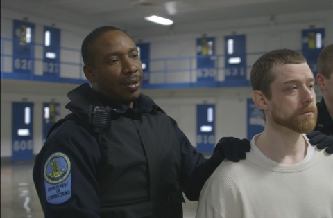
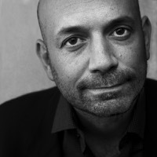

Criminal justice & prisons
Courts, wrongful convictions, incarceration, the death penalty.
14 films · 8 sessions · 65 people
Often together with: Terrorism & national securityLegal & safety for reportersRace & civil rightsMigration & bordersSurveillance & privacyWomen, gender & sexuality
Films
 Crime & ParodyWill Thwaites2026 · 88 min
Crime & ParodyWill Thwaites2026 · 88 min Free Joan LittleYoruba Richen2026 · 36 min
Free Joan LittleYoruba Richen2026 · 36 min- Short Strand: Minneapolis: On the Record + A Special ScreeningLaura Poitras, Rachel Lauren Mueller · Anne Sundberg · Yoruba Richen, Christalyn Hampton2026
 I Am Ready, WardenSmriti Mundhra2024 · 37 min
I Am Ready, WardenSmriti Mundhra2024 · 37 min The StrikeJoeBill Muñoz, Lucas Guilkey2024 · 86 min
The StrikeJoeBill Muñoz, Lucas Guilkey2024 · 86 min- The Mother TrapMark Helenowski2023 · 17 min
 Courtroom 3HAntonio Méndez Esparza2021 · 114 min
Courtroom 3HAntonio Méndez Esparza2021 · 114 min AssassinsRyan White, Jessica Hargrave2020 · 104 min
AssassinsRyan White, Jessica Hargrave2020 · 104 min Belly of the BeastErika Cohn2020 · 82 min
Belly of the BeastErika Cohn2020 · 82 min Bully. Coward. Victim. The Story of Roy CohnIvy Meeropol2019 · 98 min
Bully. Coward. Victim. The Story of Roy CohnIvy Meeropol2019 · 98 min Refuge(e)Sylvia Johnson2019 · 15 min
Refuge(e)Sylvia Johnson2019 · 15 min- The TrialJohanna Hamilton2018 · 17 min
 Abacus: Small Enough to JailSteve James2016 · 90 min
Abacus: Small Enough to JailSteve James2016 · 90 min
SolitaryKristi Jacobson2016 · 82 min
Sessions
- 2025 · Fri Oct 31 · 9:30 AMConversation · DX²Echoes from the Embassy: A Conversation with Eugene JareckiEugene Jarecki, Diana Jean Schemo
- 2024 · Thu Nov 7 · 10:20 AMPanel · DX²Are Documentaries Journalism? When Prosecutors DecideTrevor Aaronson, Kathleen McClellan, Gordon Quinn, Seth Stern, Patricia Aufderheide
- 2021 · Wed Oct 13 · 1:00pmPanelThe Chilling Effect of Libel Defamation CostsLynn Oberlander, Lynn D. Carrillo, Kelli L. Sager, Dale Cohen, Jesse Einstein
- 2021 · Wed Oct 13 · 3:30pmPanelThe Surveillance TrilogyKatherine Fehr Chandler, Jesselyn Radack, Ines Hofmann Kanna, Sonia Kennebeck, Katie Townsend
- 2018 · Thu Oct 11 · 11:00 AMPanelPivot: The Unexpected MomentMarcia Davis, Paco De Onís, Bridget Hunnicutt, Patrick Radden Keefe, Gordon Witkin, Pamela Yates
- 2018 · Sat Oct 13 · 11:45 AMWorkshopWorkshop: Research DeskJohanna Hamilton, Shola Lynch, Margot Williams
- 2016 · Fri Oct 7 · 9:30 AMPanel · DX²Color Bars: Race, Police Conduct and the Camera’s EyeCheryl W. Thompson, Craig Atkinson, Lyric Cabral, Gan Golan, Jamie Kalven, Kevin Christopher Seltzer, Julien A. Terrell, Chris Seltzer
- 2016 · Fri Oct 7 · 11:15 AMPanel · DX²Unlocking Prison: A Case StudyPhillip Martin, Pete Earley, Kristi Jacobson, Ed Pilkington, Michael I. Schiller
People most involved
 JoeBill MuñozFilmmaker, panelist · 2024
JoeBill MuñozFilmmaker, panelist · 2024 Lucas GuilkeyFilmmaker, panelist · 2024
Lucas GuilkeyFilmmaker, panelist · 2024 Kristi JacobsonFilmmaker, panelist · 2016
Kristi JacobsonFilmmaker, panelist · 2016 Pete EarleyPanelist · 2016
Pete EarleyPanelist · 2016- Johanna HamiltonFilmmaker, panelist, workshop leader · 2 editions, 2015–2018
- Lisa ArmstrongModerator · 2016
- Steve JamesFilmmaker · 2016
- Ti-Hua ChangPanelist · 2016
- Vera SungFilm subject · 2016
- Ivy MeeropolFilmmaker, panelist · 2 editions, 2019–2025
- Mark HelenowskiFilmmaker · 2023
- Samantha MichaelsJournalists behind the film · 2023

- Smriti MundhraFilmmaker · 2024
- John Henry RamirezFilm subject · 2024
 Nicki MayoModerator, panelist · 2 editions, 2023–2024
Nicki MayoModerator, panelist · 2 editions, 2023–2024- Ryan WhiteFilmmaker, panelist · 2 editions, 2017–2020
- Jessica HargraveFilmmaker · 2020
 Erika CohnFilmmaker, panelist · 3 editions, 2020–2024
Erika CohnFilmmaker, panelist · 3 editions, 2020–2024
Antonio Méndez EsparzaFilmmaker, panelist · 2021 Will ThwaitesPanelist, filmmaker · 2026
Will ThwaitesPanelist, filmmaker · 2026 Yoruba RichenFilmmaker, panelist · 3 editions, 2023–2026Newmark Graduate School of Journalism at CUNY
Yoruba RichenFilmmaker, panelist · 3 editions, 2023–2026Newmark Graduate School of Journalism at CUNY Laura PoitrasFilmmaker, panelist · 2 editions, 2025–2026
Laura PoitrasFilmmaker, panelist · 2 editions, 2025–2026 Rachel Lauren Mueller · Anne Sundberg · Yoruba RichenFilmmaker, panelist · 2 editions, 2022–2026
Rachel Lauren Mueller · Anne Sundberg · Yoruba RichenFilmmaker, panelist · 2 editions, 2022–2026 Christalyn HamptonFilmmaker · 2026
Christalyn HamptonFilmmaker · 2026 Bonnie BertramPanelist, filmmaker · 2026
Bonnie BertramPanelist, filmmaker · 2026 Craig AtkinsonPanelist · 2016
Craig AtkinsonPanelist · 2016 Lyric CabralPanelist, filmmaker · 3 editions, 2015–2017
Lyric CabralPanelist, filmmaker · 3 editions, 2015–2017
 Julien A. TerrellPanelist · 2016
Julien A. TerrellPanelist · 2016